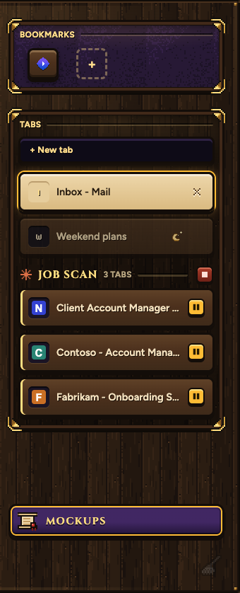
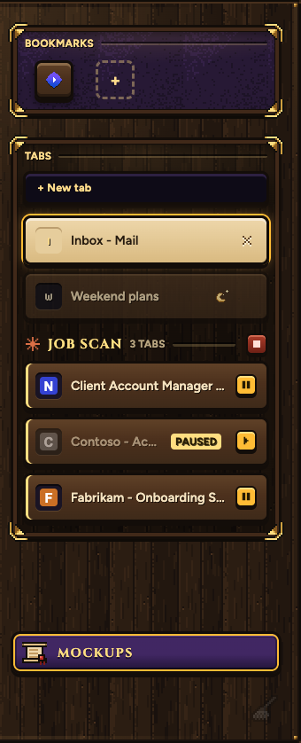
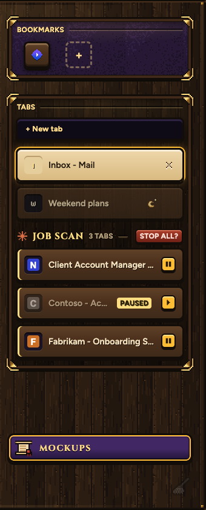
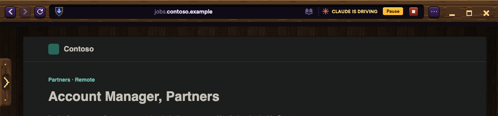
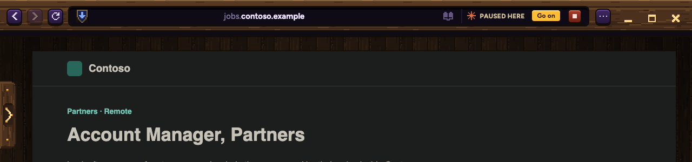

You stop and start Claude on one tab while it keeps going on the others. STOP still stops everything, and Claude can start again after it in the same chat. These are Samara's real tab list and band. The job and its sites are made up.
Each of Claude's tabs gets a Pause key where your own tabs have their close key. A paused tab goes grey and says PAUSED, and its key turns into Go on. The red key on the group stays the stop for all, and now asks STOP ALL?.



Pause sits before STOP and stops this tab only.

The band says PAUSED HERE. Go on lets Claude carry on from where it was.

Claude reads this with its next step. A paused tab refuses Claude's clicks and typing until you press Go on.
Joshua paused tab 12 (Contoso - Account Manager, Partners). Leave it alone. Your other tabs keep going. You will be told when he lets you go on.
Joshua let you go on in tab 12 (Contoso - Account Manager, Partners).
Joshua stopped the whole job. To start again, send a new plan.